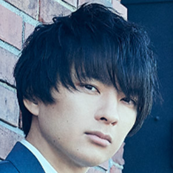
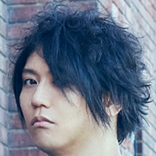

わからずやには見えない魔法を─
透明感に溢れながらも個性的なトゲを持つ斎藤宏介のボーカルと
エッジが効いたコンビネーション抜群のバンドアンサンブルが共鳴共存するROCK/POPの新世界。
田淵作詩曲のキャッチーなメロディーラインとアンバランスな3人の個性が織りなす鮮烈なライヴパフォーマンスで
右肩上がりにセールスと動員を延ばし続ける3ピース・ロックバンド。
テレビアニメ「TIGER&BUNNY」オープニングテーマ等、活躍の場を広げている。
今年で結成20周年を迎える彼らの快進撃は止まらない。
Gt&Vo - 斎藤 宏介 kosuke saito
Birth: 1985.06.24
guitar: ATELIER Z Lower East Side（Off White）etc…
other: XIIX(Band)
XIIX OfficialSite

Ba - 田淵 智也 Tomoya Tabuchi
Birth: 1985.04.26
Base: Sago Classic Style J4 Custom "Tabuchi Mk-II" etc…
other: THE KEBABS(Band),Q-MHz(Sound Produce Team)
THE KEBABS OfficialSiteQ-MHz OfficialSite

dr - 鈴木貴雄 Takao Suzuki
Birth: 1985.06.13
Dram: DW Collector's Maple (Natural to Regal Blue Fade) etc…
other: PACAO(Streamer)
PACAO OfficialTwitter